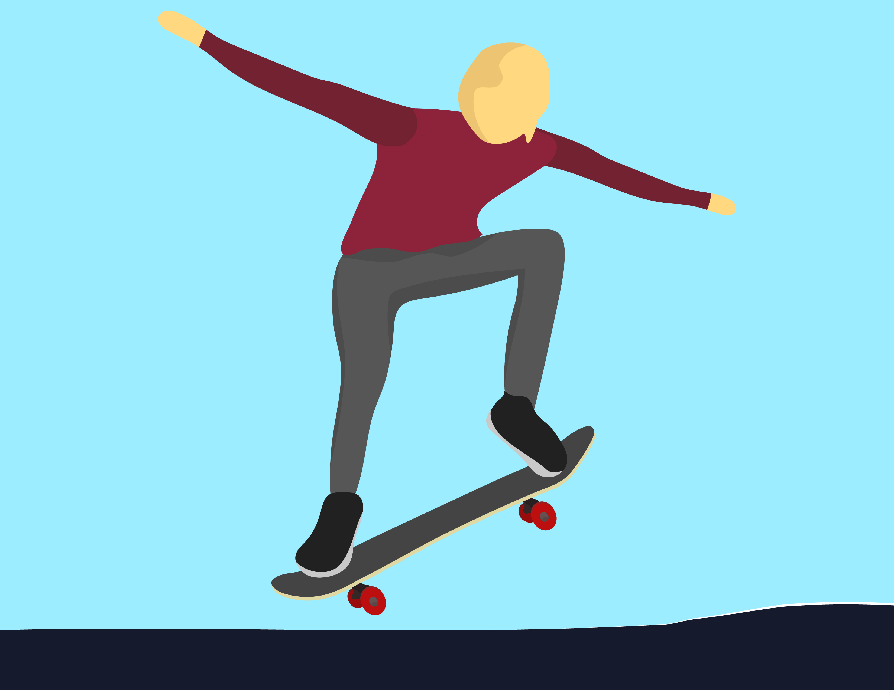
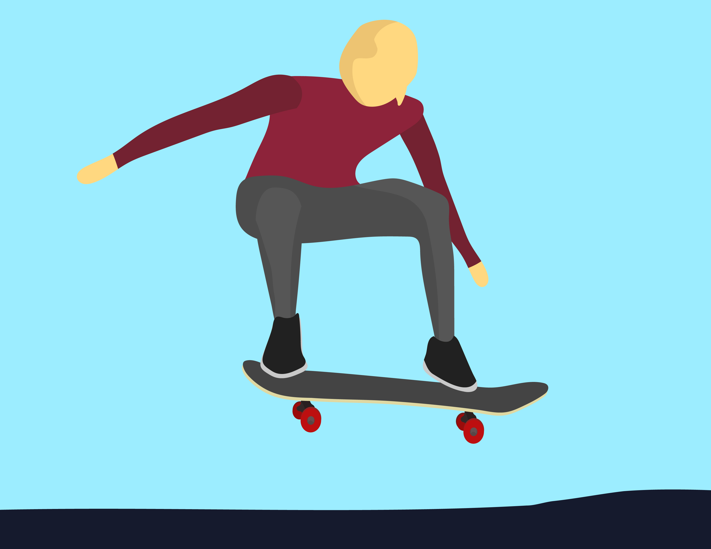

STEP 5
Getting Air
At this point, you’ve popped the board and slid your foot up—now you’re in the air! This is the part where the Ollie really comes together. As your board lifts off the ground, keep your body centered over the deck. Resist the urge to lean too far back or forward, as that will throw off your balance.


You should still have your knees slightly bent, so you're ready for the landing. The height of your ollie depends on how strong your pop is and how well you slide your front foot up, so focus on timing and staying controlled throughout the jump.